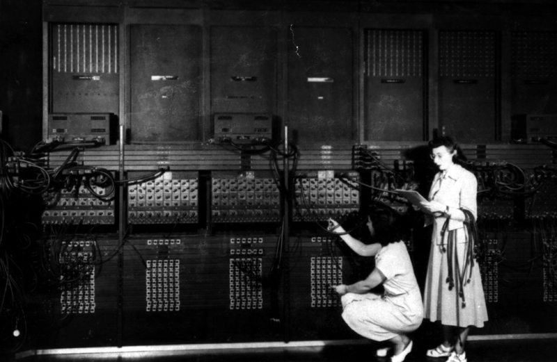
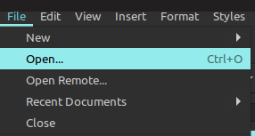
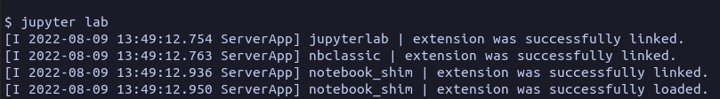
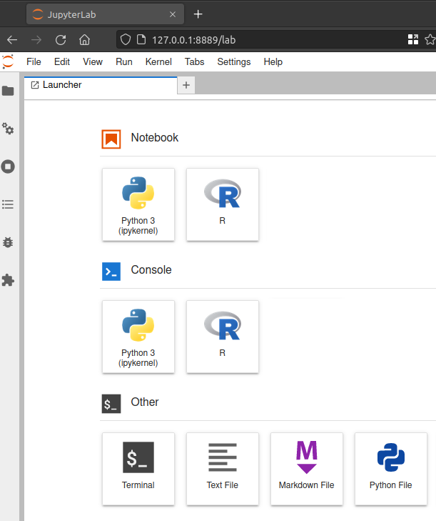
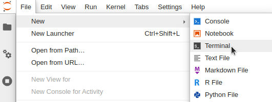
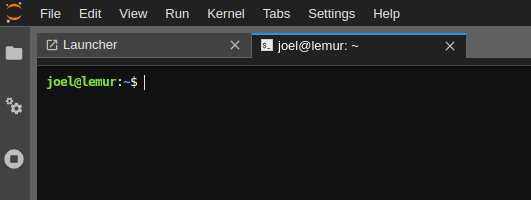

What is a computer?
A few of the world’s most prominent programmers of the time computing ballistic trajectories on the ENIAC computer during the second world war:
Unidentified U.S. Army photographer, Public domain, Mike Muuss’ computer history archive
What is text-based communication?
Open a file from a graphical menu:
Opening a file via a text-based interface:
file.open('filename.csv')
Which shell will we be using?
The Bash logo:

How do we open Bash on our computer?
Executing the shell command jupyter lab:

The JupyterLab landing page:

How do we open Bash from JupyterLab
Opening a terminal from JupyterLab:

An open JupyterLab terminal with black background:

Your first words in Bash
The default prompt character:
Typing in the whoami command for showing your username and pressing enter to run it:
username
Where are we?
The pwd command stands for Print Working Directory.
# Linux
/home/username
# MacOS
/Users/username
# Windows
/c/Users/username
Exploring the filesystem
Downloads Music
Documents todo.txt
Pictures my_program